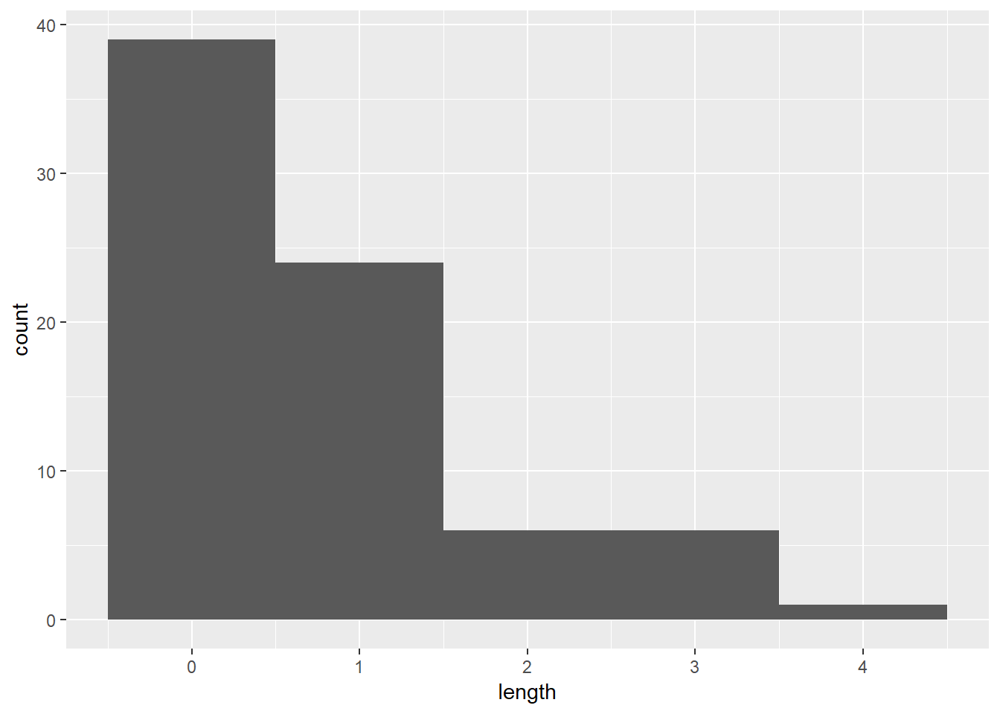
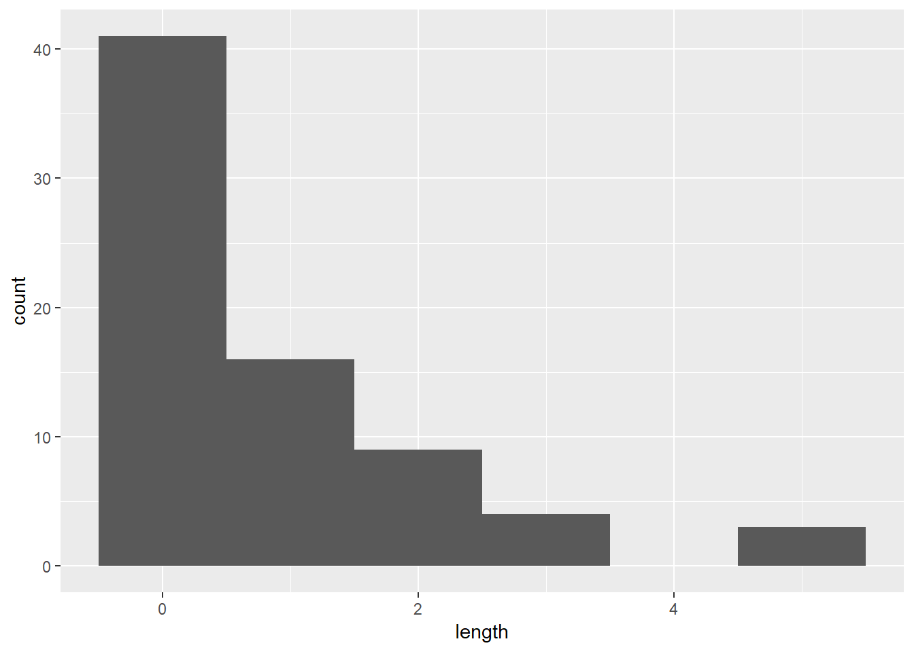
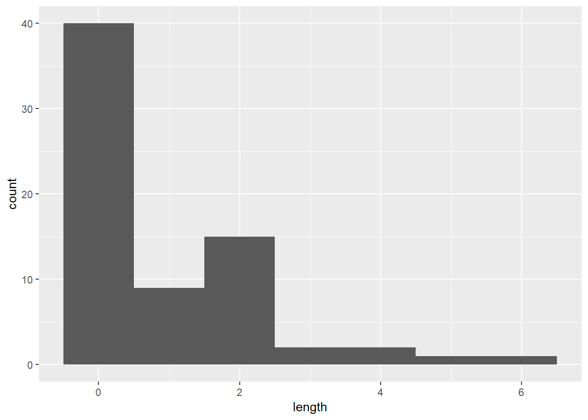

Week 3
Complete all Exercises, and submit answers to Questions on the Coursera platform.
0.8 Hot Hands
Basketball players who make several baskets in succession are described as having a hot hand. Fans and players have long believed in the hot hand phenomenon, which refutes the assumption that each shot is independent of the next. However, a 1985 paper by Gilovich, Vallone, and Tversky collected evidence that contradicted this belief and showed that successive shots are independent events. This paper started a great controversy that continues to this day, as you can see by Googling hot hand basketball.
We do not expect to resolve this controversy today. However, in this lab we’ll apply one approach to answering questions like this. The goals for this lab are to (1) think about the effects of independent and dependent events, (2) learn how to simulate shooting streaks in R, and (3) to compare a simulation to actual data in order to determine if the hot hand phenomenon appears to be real.
0.9 Getting Started
0.9.1 Load packages
In this lab we will explore the data using the dplyr package and visualize it using the ggplot2 package for data visualization. The data can be found in the companion package for this course, statsr.
Let’s load the packages.
library(statsr)
library(dplyr)
library(ggplot2)0.9.2 Data
Our investigation will focus on the performance of one player: Kobe Bryant of the Los Angeles Lakers. His performance against the Orlando Magic in the 2009 NBA finals earned him the title Most Valuable Player and many spectators commented on how he appeared to show a hot hand. Let’s load some necessary files that we will need for this lab.
data(kobe_basket)This data frame contains 133 observations and 6 variables, where every row records a shot taken by Kobe Bryant. The shot variable in this dataset indicates whether the shot was a hit (H) or a miss (M).
Just looking at the string of hits and misses, it can be difficult to gauge whether or not it seems like Kobe was shooting with a hot hand. One way we can approach this is by considering the belief that hot hand shooters tend to go on shooting streaks. For this lab, we define the length of a shooting streak to be the number of consecutive baskets made until a miss occurs.
For example, in Game 1 Kobe had the following sequence of hits and misses from his nine shot attempts in the first quarter:
\[ \textrm{H M | M | H H M | M | M | M} \]
You can verify this by viewing the first 8 rows of the data in the data viewer.
Within the nine shot attempts, there are six streaks, which are separated by a “|” above. Their lengths are one, zero, two, zero, zero, zero (in order of occurrence).
- Fill in the blank: A streak length of 1 means one ___ followed by one miss.
- hit
- miss
- Fill in the blank: A streak length of 0 means one ___ which must occur after a miss that ended the preceeding streak.
- hit
- miss
Counting streak lengths manually for all 133 shots would get tedious, so we’ll use the custom function calc_streak to calculate them, and store the results in a data frame called kobe_streak as the length variable.
kobe_streak <- calc_streak(kobe_basket$shot)We can then take a look at the distribution of these streak lengths.
ggplot(data = kobe_streak, aes(x = length)) +
geom_histogram(binwidth = 1)
- Which of the following is false about the distribution of Kobe’s streak lengths from the 2009 NBA finals.
- The distribution of Kobe’s streaks is unimodal and right skewed.
- The typical length of a streak is 0 since the median of the distribution is at 0.
- The IQR of the distribution is 1.
- The longest streak of baskets is of length 4.
- The shortest streak is of length 1.
kobe_streak %>%
summarise(kobe_streak,median(length), IQR(length))## Warning in format.data.frame(x, digits = digits, na.encode = FALSE):
## corrupt data frame: columns will be truncated or padded with NAs## kobe_streak median(length) IQR(length)
## 1 1 0 10.10 Compared to What?
We’ve shown that Kobe had some long shooting streaks, but are they long enough to support the belief that he had hot hands? What can we compare them to?
To answer these questions, let’s return to the idea of independence. Two processes are independent if the outcome of one process doesn’t effect the outcome of the second. If each shot that a player takes is an independent process, having made or missed your first shot will not affect the probability that you will make or miss your second shot.
A shooter with a hot hand will have shots that are not independent of one another. Specifically, if the shooter makes his first shot, the hot hand model says he will have a higher probability of making his second shot.
Let’s suppose for a moment that the hot hand model is valid for Kobe. During his career, the percentage of time Kobe makes a basket (i.e. his shooting percentage) is about 45%, or in probability notation,
\[ P(\textrm{shot 1 = H}) = 0.45 \]
If he makes the first shot and has a hot hand (not independent shots), then the probability that he makes his second shot would go up to, let’s say, 60%,
\[ P(\textrm{shot 2 = H} \, | \, \textrm{shot 1 = H}) = 0.60 \]
As a result of these increased probabilites, you’d expect Kobe to have longer streaks. Compare this to the skeptical perspective where Kobe does not have a hot hand, where each shot is independent of the next. If he hit his first shot, the probability that he makes the second is still 0.45.
\[ P(\textrm{shot 2 = H} \, | \, \textrm{shot 1 = H}) = 0.45 \]
In other words, making the first shot did nothing to effect the probability that he’d make his second shot. If Kobe’s shots are independent, then he’d have the same probability of hitting every shot regardless of his past shots: 45%.
Now that we’ve phrased the situation in terms of independent shots, let’s return to the question: how do we tell if Kobe’s shooting streaks are long enough to indicate that he has hot hands? We can compare his streak lengths to someone without hot hands: an independent shooter.
0.11 Simulations in R
While we don’t have any data from a shooter we know to have independent shots, that sort of data is very easy to simulate in R. In a simulation, you set the ground rules of a random process and then the computer uses random numbers to generate an outcome that adheres to those rules. As a simple example, you can simulate flipping a fair coin with the following.
coin_outcomes <- c("heads", "tails")
sample(coin_outcomes, size = 1, replace = TRUE)## [1] "heads"The vector outcomes can be thought of as a hat with two slips of paper in it: one slip says heads and the other says tails. The function sample draws one slip from the hat and tells us if it was a head or a tail.
Run the second command listed above several times. Just like when flipping a coin, sometimes you’ll get a heads, sometimes you’ll get a tails, but in the long run, you’d expect to get roughly equal numbers of each.
If you wanted to simulate flipping a fair coin 100 times, you could either run the function 100 times or, more simply, adjust the size argument, which governs how many samples to draw (the replace = TRUE argument indicates we put the slip of paper back in the hat before drawing again). Save the resulting vector of heads and tails in a new object called sim_fair_coin.
sim_fair_coin <- sample(coin_outcomes, size = 100, replace = TRUE)To view the results of this simulation, type the name of the object and then use table to count up the number of heads and tails.
sim_fair_coin## [1] "heads" "heads" "tails" "tails" "tails" "heads" "tails" "tails"
## [9] "heads" "tails" "heads" "tails" "tails" "heads" "heads" "tails"
## [17] "tails" "heads" "tails" "tails" "heads" "heads" "tails" "heads"
## [25] "heads" "tails" "tails" "heads" "tails" "tails" "heads" "tails"
## [33] "heads" "tails" "tails" "heads" "tails" "heads" "heads" "tails"
## [41] "tails" "tails" "tails" "heads" "tails" "heads" "heads" "heads"
## [49] "heads" "tails" "heads" "tails" "tails" "tails" "heads" "tails"
## [57] "tails" "heads" "heads" "tails" "heads" "heads" "heads" "heads"
## [65] "tails" "tails" "heads" "tails" "heads" "heads" "heads" "tails"
## [73] "heads" "tails" "tails" "tails" "heads" "heads" "heads" "heads"
## [81] "tails" "tails" "tails" "tails" "tails" "tails" "heads" "heads"
## [89] "heads" "tails" "tails" "tails" "tails" "tails" "tails" "tails"
## [97] "tails" "heads" "heads" "tails"table(sim_fair_coin)## sim_fair_coin
## heads tails
## 45 55Since there are only two elements in outcomes, the probability that we “flip” a coin and it lands heads is 0.5. Say we’re trying to simulate an unfair coin that we know only lands heads 20% of the time. We can adjust for this by adding an argument called prob, which provides a vector of two probability weights.
sim_unfair_coin <- sample(coin_outcomes, size = 100, replace = TRUE,
prob = c(0.2, 0.8))
table(sim_unfair_coin) ## sim_unfair_coin
## heads tails
## 29 71prob = c(0.2, 0.8) indicates that for the two elements in the outcomes vector, we want to select the first one, heads, with probability 0.2 and the second one, tails with probability 0.8. Another way of thinking about this is to think of the outcome space as a bag of 10 chips, where 2 chips are labeled “head” and 8 chips “tail”. Therefore at each draw, the probability of drawing a chip that says “head”" is 20%, and “tail” is 80%.
Exercise: In your simulation of flipping the unfair coin 100 times, how many flips came up heads?
In a sense, we’ve shrunken the size of the slip of paper that says “heads”, making it less likely to be drawn and we’ve increased the size of the slip of paper saying “tails”, making it more likely to be drawn. When we simulated the fair coin, both slips of paper were the same size. This happens by default if you don’t provide a prob argument; all elements in the outcomes vector have an equal probability of being drawn.
If you want to learn more about sample or any other function, recall that you can always check out its help file with ?sample.
0.12 Simulating the Independent Shooter
Simulating a basketball player who has independent shots uses the same mechanism that we use to simulate a coin flip. To simulate a single shot from an independent shooter with a shooting percentage of 50% we type,
shot_outcomes <- c("H", "M")
sim_basket <- sample(shot_outcomes, size = 1, replace = TRUE)To make a valid comparison between Kobe and our simulated independent shooter, we need to align both their shooting percentage and the number of attempted shots.
Exercise: What change needs to be made to the sample function so that it reflects a shooting percentage of 45%? Make this adjustment, then run a simulation to sample 133 shots. Assign the output of this simulation to a new object called sim_basket.
# type your code for the Exercise here, and Knit
sim_basket <- sample(shot_outcomes, size = 133, replace = TRUE, prob = c(0.45,0.55))Note that we’ve named the new vector sim_basket, the same name that we gave to the previous vector reflecting a shooting percentage of 50%. In this situation, R overwrites the old object with the new one, so always make sure that you don’t need the information in an old vector before reassigning its name.
With the results of the simulation saved as sim_basket, we have the data necessary to compare Kobe to our independent shooter.
Both data sets represent the results of 133 shot attempts, each with the same shooting percentage of 45%. We know that our simulated data is from a shooter that has independent shots. That is, we know the simulated shooter does not have a hot hand.
0.12.1 Comparing Kobe Bryant to the Independent Shooter
Exercise: Using calc_streak, compute the streak lengths of sim_basket, and save the results in a data frame called sim_streak. Note that since the sim_streak object is just a vector and not a variable in a data frame, we don’t need to first select it from a data frame like we did earlier when we calculated the streak lengths for Kobe’s shots.
# type your code for the Exercise here, and Knit
sim_streak <- calc_streak(sim_basket)Exercise: Make a plot of the distribution of simulated streak lengths of the independent shooter. What is the typical streak length for this simulated independent shooter with a 45% shooting percentage? How long is the player’s longest streak of baskets in 133 shots?
# type your code for the Exercise here, and Knit
ggplot(data = sim_streak, aes(x = length)) +geom_histogram(binwidth = 1)
max(sim_streak)- If you were to run the simulation of the independent shooter a second time, how would you expect its streak distribution to compare to the distribution from the exercise above?
- Exactly the same
- Somewhat similar
- Totally different
#independent shooter sim 2
sim_basket1 <- sample(shot_outcomes, size = 133, replace = TRUE, prob = c(0.45,0.55))
sim_streak1 <- calc_streak(sim_basket1)
ggplot(sim_streak1, aes(x = length)) + geom_histogram(binwidth = 1)
- How does Kobe Bryant’s distribution of streak lengths compare to the distribution of streak lengths for the simulated shooter? Using this comparison, do you have evidence that the hot hand model fits Kobe’s shooting patterns?
- The distributions look very similar. Therefore, there doesn’t appear to be evidence for Kobe Bryant’s hot hand.
- The distributions look very similar. Therefore, there appears to be evidence for Kobe Bryant’s hot hand.
- The distributions look very different. Therefore, there doesn’t appear to be evidence for Kobe Bryant’s hot hand.
- The distributions look very different. Therefore, there appears to be evidence for Kobe Bryant’s hot hand.
Exercise: What concepts from the course videos are covered in this lab? What concepts, if any, are not covered in the videos? Have you seen these concepts elsewhere, e.g. textbook, previous labs, or practice problems?
This is a derivative of an OpenIntro lab, and is released under a Attribution-NonCommercial-ShareAlike 3.0 United States license.